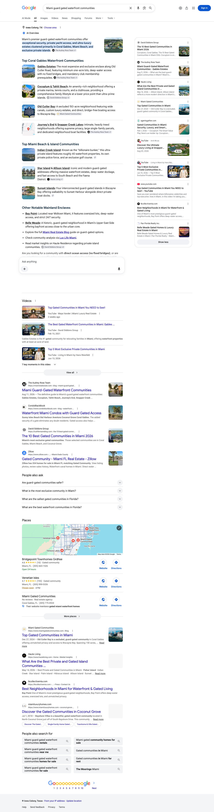
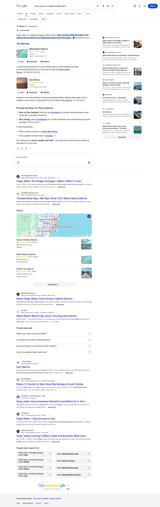
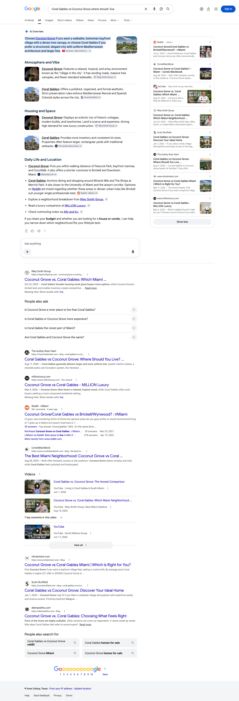

August 2026 | The Audrey Ross Team
Executive summary
Every guide that went live on miamirealestate.com this month was named as a source in at least one AI answer. Across the twelve Miami questions we track for you, your site is cited on ten, and sixteen separate pages on the domain were carried as the source behind those answers.
Perplexity carries ten of the twelve. It answers with your own pages on the guard-gated waterfront enclaves, Coral Gables, Coconut Grove, Cocoplum, Pinecrest, deep-water dockage and both Miami relocation questions. Each of those answers is built on your pages, in most cases the specific guide written for that question.
Google produced an AI Overview on eight of the twelve questions and named you on five of them, including the guard-gated waterfront question, which sits directly on your specialism. On four of the twelve Google produced no AI Overview in these readings, so there was no AI answer to be cited in.
On your own name, the engines answer with your own site. Both answer engines that wrote an answer on the team-name question named miamirealestate.com among their sources. Between them they reached for the home page, the pages that carry the team and its listings, and the founder profile.
One note on the tiles below: the clicks figure is your total Google Search clicks for the dates shown, across the whole of miamirealestate.com. It is there for context, not as a count of the visits these AI answers sent.
Citation matrix
✓ Cited: your site is among the sources that answer drew on
– Not cited in the reading for that column
◦ Google did not generate an AI Overview for this question, so there was no AI answer to be cited in
| Buyer question | Google AI Overview | Perplexity | ChatGPT | |
|---|---|---|---|---|
| Miami guard gated waterfront communitiesmiamirealestate.com | ✓ | ✓ | ✓ | |
| Audrey Ross Miami luxury real estatemiamirealestate.com | ◦ | ✓ | ✓ | |
| Pinecrest FL real estate guidemiamirealestate.com | – | ✓ | ✓ | |
| Living in Coral Gables FL guidemiamirealestate.com | ✓ | ✓ | – | |
| Coral Gables vs Coconut Grove where should I livemiamirealestate.com | ✓ | ✓ | – | |
| Deep water no bridge dockage Miamimiamirealestate.com | ✓ | ✓ | – | |
| Cocoplum Coral Gables real estatemiamirealestate.com | ◦ | ✓ | – | |
| Coconut Grove Miami real estate guidemiamirealestate.com | ✓ | ✓ | – | |
| Moving to Miami from New Yorkmiamirealestate.com | ◦ | ✓ | – | |
| Moving to Miami relocation and tax guidemiamirealestate.com | – | ✓ | – | |
| Best Miami luxury real estate agent | – | – | – | |
| Gables Estates Miami homes for sale | ◦ | – | – |
Reading the matrix. Ten of the twelve questions are cited on at least one engine. Perplexity carries ten of them and ChatGPT three. In the Google column, an AI Overview was produced on eight of the twelve questions and your site was named on five of those. On the other four no AI Overview was produced at all in these readings, so there was no AI answer to be cited in, and all but one of those questions is already answered with your own pages on the answer engines. Two questions in the set are open ground, and both are carried into the plan at the end: the selection question a buyer asks before any neighborhood question, and the Gables Estates listing search, where no engine has settled on an answer yet.
One piece of context for this month. The guides written for you this month went live on miamirealestate.com in the middle of August, so every reading below sits in the weeks after they were published rather than across a full month of them being live on the site. Two things are worth knowing about how to read the columns. Perplexity and ChatGPT were read on multiple days between August 19 and August 25. Google’s AI Overview column is different: it is a single reading of each question taken on August 29, read from the page itself rather than across the month, so treat it as a snapshot. A dash there means your site was not among the sources Google showed on that one reading, which is not the same as being absent for the month. Second, all three engines rebuild their answers on every run and Google localizes its answers by where the search is run from, so a check mark means your site was among the sources on at least one reading in that window, not that it appears on every run. The reverse matters just as much: a question without a mark is one we have not seen you carried on yet, not a settled absence, because a different reading on a different day can return a different set of sources. Source lists were read as first rendered, so any list of sources named here is what the engine showed first, not a complete inventory.
Story one
Perplexity names miamirealestate.com on ten of the twelve questions we track. The pattern is clean: each question is answered by the page written for it, from the guard-gated waterfront enclaves through Coral Gables, Coconut Grove, Cocoplum and Pinecrest to deep-water dockage and both relocation questions.
Story two
Google produced an AI Overview on eight of the twelve questions in these readings and named miamirealestate.com on five of them. Those five include the guard-gated waterfront question, the closest question in the set to what your team is known for, and it is also the one question this month answered with your pages on all three engines at once.
| Buyer question | Status | Your page carried as the source |
|---|---|---|
| Miami guard gated waterfront communities | Cited | Guard-gated waterfront communities guide |
| Living in Coral Gables FL guide | Cited | Living in Coral Gables guide |
| Coral Gables vs Coconut Grove where should I live | Cited | Coral Gables vs Coconut Grove guide |
| Deep water no bridge dockage Miami | Cited | Deep-water dockage guide |
| Coconut Grove Miami real estate guide | Cited | Coconut Grove real estate guide |



Story three
ChatGPT names miamirealestate.com on three of the twelve questions, and the three it names are the three closest to what the team is known for: your own name, guard-gated waterfront Miami, and Pinecrest.
| Buyer question | Status | Your page carried as the source |
|---|---|---|
| Miami guard gated waterfront communities | Cited | miami guard gated waterfront communities the insider guide 2026 |
| Audrey Ross Miami luxury real estate | Cited | Home page audrey ross who is audrey ross miami luxury real estate and two more |
| Pinecrest FL real estate guide | Cited | pinecrest real estate guide acre lots and eu 1 estate zoning 2026 |
Pages earning citations
These are the pages on miamirealestate.com that were carried as a source in an AI answer this month. Each row is one of your pages, the number of tracked questions it was cited on, and the questions themselves. Every guide that went live this month appears here, alongside the home page and the pages that carry the team’s identity and listings.
Gaps as opportunities
The pattern in this month’s readings is simple. Where a page exists at guide depth, the engines use it. Where one does not, the question is still open. Five moves, in order, and three of them need no new writing at all.
One guide from this month’s set is not live yet: the Miami and Miami-Dade market report. It is written, fact-checked and ready to publish, and it is the only piece still sitting off the site. Market and pricing questions reward a recurring, dated market piece more than almost anything else a real estate site can publish, so this one needs no writing at all. We publish it in the first week of September.
The highest-value question in the tracked set is the one a buyer asks before any neighborhood question: how to choose a Miami luxury agent. Google writes an AI answer there today, and no page on the site addresses that intent yet. The founder profile states credentials; a selection answer needs criteria, a comparison structure and proof that carries a date. Two inputs from your team unlock it, and they are the same two that make every other page stronger: one agreed way of stating the team’s length of experience, and a dated list of the recognitions you want quoted. The page will set out how to evaluate an agent rather than claim a ranking, and it will quote only dated third-party recognitions your team supplies.
Among the questions where Google writes an answer and sources it elsewhere, the relocation and tax guide is the one waiting on nothing but your own numbers. It was built with its price and market tables ready to hold figures only your own market data can supply, which is why those cells are still open. An AI answer reaches for a specific figure with an as-of date attached to it, and a figure sourced to your team is a different class of detail than one lifted from a general market page. One pull fills that page, and the same figures then feed the enclave guides.
Pinecrest is one of the questions this month answered by two of your pages, the guide and the community page. Perplexity named both, and ChatGPT named the guide. The community pages for the other enclaves already exist. Bringing them to the same depth as the guides, starting with Gables Estates, does two things at once: it repeats a pattern already proven on your own site, and it puts a page in front of the Gables Estates listing search, where no engine has settled on an answer yet. That is ground to take rather than ground to win back.
Three small conditions, all inside your control. First, one of the links an engine hands to buyers points at a buyer path the site has retired, so anyone who follows it lands on the home page instead of your buyer guide; redirecting the retired path to the live guide puts them where the answer intended. Second, the agent profile pages are being quoted on your name question but are not included in the site’s own list of pages, which makes them harder for engines to keep reaching. Third, the site states the team’s length of experience two different ways on different pages. Engines check the same claim across your site and your outside profiles, so one decision from you strengthens every page, every profile and every future answer at the same time. It is the cheapest improvement on this list.